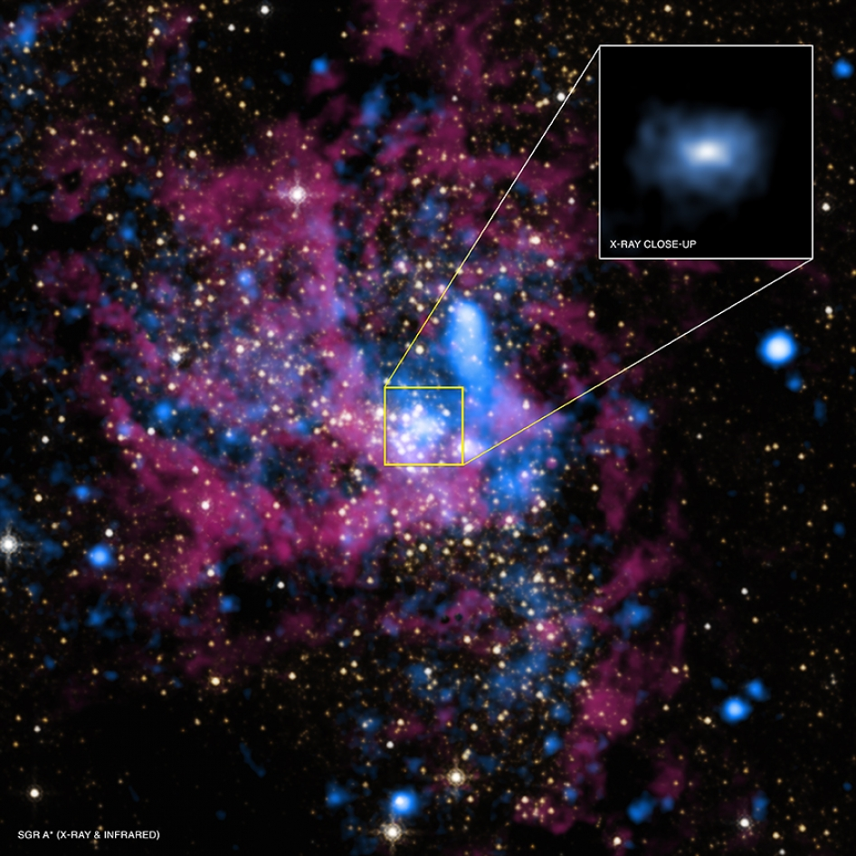
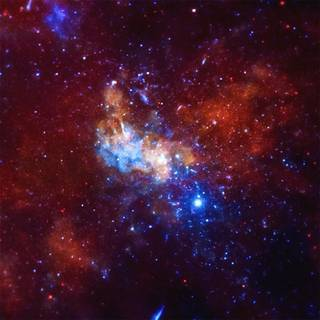

WHAT IS BLACK HOLE?
- A black hole is a place in space
where gravity pulls so much that even light can not get out.
A black hole does not have a surface, like a planet or star.
Matter has squeezed into a tiny space. Therefore, the gravity
is so strong. This can occur when star is dying.
- Albert Einstein first predicted black holes 1916 with his
general theory of relativity. The term "black hole " was coined
in 1967 by American astronomer Jhon Wheeler, and the first one was
discovered in 1971.
- Black hole can not be noticed because no light can get out.
They are invisible. Space telescopes with special tools can help
to find black hole. Stars that are very close to black holes act
diffirently than other stars can be seen with the special tools.
|


|
HOW BIG ARE BLACK HOLES?
- Black hole could be big or small. It is thought to the fact
that the smallest black holes are as small as just one atom
by scientists. Although these black holes are very tiny,
they have the mass of a large mountain.Mass is the amount
of matter, or "stuff," in an object.
- Stellar is another kind of black hole.Stellar black holes are
small but they are quite deadly. Its mass can be more than 20 times
mass of sun. This leads to a crazy amount of gravitational force
pulling on objects around it. Black holes consume the dust and gas
from the galaxy around them, growing in size. There may be many,
many stellar mass black holes in Earth's galaxy.Earth galaxy is
called the Milky Way.
- Supermassive black holes are the largest black holes.
Moreover they have a radius similar to that of Earth's closest star.
Masses of these black holes are more than 1 million suns together.
Proof that every large galaxy contains a supermassive black holes
at its center have been found by scientists. The supermassive
black hole at the center of the Milky Way galaxy is called
Sagittarius A. It has a mass equal to about 4 million suns and
would fit inside a very large ball that could hold
a few million Earths.
|


|
HOW DO BLACK HOLES FORM?
- It is believed to the fact that the smallest black holes formed
when the universe began.
- When the center of a very big star falls in upon itself,
or collapses; Stellar black holes are made. When this happens
it causes a supernova. A supernova is an exploding star that blasts
part of the star into space.It is thought to the fact that
supermassive black holes were made at the same time
as the galaxy they are in.
|


|
WHY ARE BLACK HOLES BLACK?
- Nothing can escape a balck hole really.Not even light waves
which are the fastest thing in the Universe can get out.This is
what makes black holes black. Gravity is a force associated
with massive objects. The more massive something is, the harder
it tugs on objects around it.
|


|